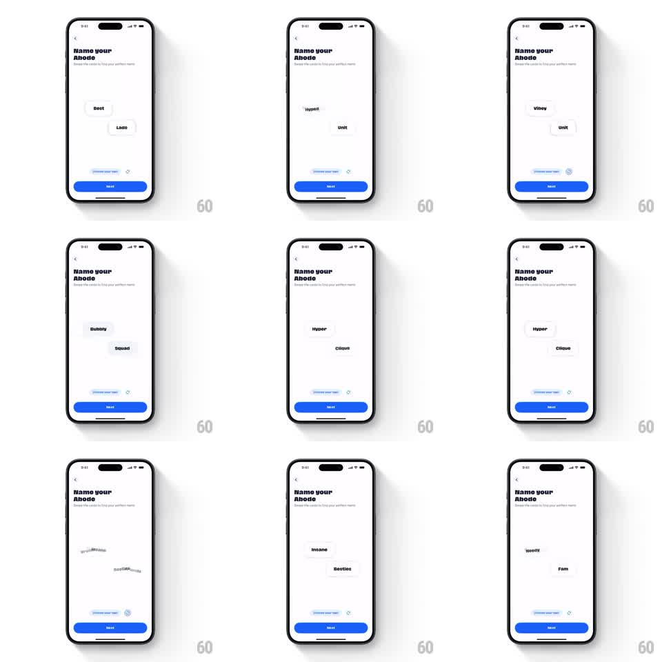

Media
Frame-by-frame

Rebuild this interaction 1:1: Abode's "Name your Abode" shuffle - two floating name pills (Best/Lads, Hyper/Clique, Insane/Besties...) drift on the white screen, and tapping the refresh icon makes them scatter with a spin and spring back in as a fresh pair of name cards.

Rebuild this interaction 1:1: Abode's "Name your Abode" shuffle - two floating name pills (Best/Lads, Hyper/Clique, Insane/Besties...) drift on the white screen, and tapping the refresh icon makes them scatter with a spin and spring back in as a fresh pair of name cards. ## Integration Integration: stack-agnostic spec - springs given as stiffness/damping, timed motions as duration + curve; map every value to your framework and animation library of choice. ## Scene White "Name your Abode" screen with a back chevron and the subhead "Swipe the cards to find your perfect name". Two name pills float at loose, slightly rotated positions mid-screen. Bottom: a "Choose your own" field with a refresh/shuffle icon and a blue Next button. ## Motion spec Pattern: tap-to-shuffle card swap with spin-out, spring-in. - Idle: the two pills drift slowly (translateX/Y +/-6pt, 4s sine, phase-offset) at slight rotations (+/-4deg). - Tap refresh: the current pills spin out in opposite directions (rotate +/-120deg, scale -> 0.3, fly off 40pt, 250ms ease-in). - The new pair springs in from the same exit edges (scale 0.4 -> 1.05 -> 1.0, spring ~300/15, rotate from +/-45deg to their resting tilt, 120ms stagger). - The refresh icon itself spins 180deg on each tap (300ms ease-out). - Each new pair lands at a fresh random-ish offset within a safe zone, never overlapping the caption or buttons. ## Calibration - Exit and entrance are fast and springy - the shuffle should feel like a slot-machine flick. - The two pills never share the same resting tilt or drift phase. ## Reduced motion Old pills fade out and new ones fade in (200ms) without spin or travel. ## Don't miss - The pills keep their slight hand-placed rotation after landing - nothing snaps to axis. - The refresh icon's spin direction alternates each tap.